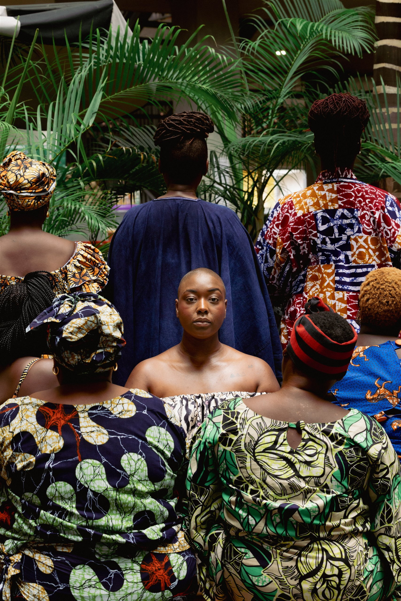

GEORGIANA VIOU
Cheffe étoilée, écrivaine, conférencière & fondatrice de l'initiative « Les Patronnes »
En savoir plus sur la fondatrice
Le projet
Une archive vivante des marchés béninois
Les Patronnes célèbre les femmes qui, chaque jour, font vivre les marchés de Cotonou. Commerçantes, cuisinières, passeuses de savoir-faire et figures de quartier : elles nourrissent une ville, font circuler les matières, les idées et les liens qui tiennent une communauté debout.
Imaginé par Georgiana Viou, le projet donne à ces présences la place qu’elles méritent. Il fait de la photographie, de la mode et de la gastronomie des manières de regarder autrement : avec attention, avec respect et à hauteur de celles dont les gestes façonnent le Bénin contemporain.
Notre démarche
Les Patronnes part d’un geste simple : prendre le temps d’écouter celles dont le travail est partout, mais dont les récits sont encore trop rarement inscrits dans l’histoire collective.
Les portraits, les conversations et les images produites par le projet composent une mémoire sensible des marchés. Ils protègent de l’oubli des visages, des voix et des pratiques qui se transmettent d’une génération à l’autre.
Chaque présence documentée affirme que ces femmes comptent aujourd’hui et compteront encore lorsque les étals auront changé de mains.
Un marché peut devenir une galerie à ciel ouvert, un podium ou une table de banquet. Les Patronnes transforme l’espace quotidien en lieu de célébration, sans jamais le couper de celles qui le font vivre.
La mode révèle les matières, la photographie pose un regard juste et la gastronomie rassemble : trois langages pour mettre les voix en commun.
Les Patronnes reconnaît l’expertise de celles qui savent choisir, préparer, négocier et nourrir. Ces compétences ne sont pas des détails de la vie économique : elles en sont l’une des forces profondes.
Le projet rend hommage à l’inventivité, à la souveraineté et à la générosité des femmes des marchés béninois.
Le projet relie les femmes de marché, les artistes, les cuisinières, les partenaires et les visiteurs autour d’une même ambition : reconnaître ce qui existe déjà et lui offrir une plus grande résonance.
Les Patronnes est une histoire collective, appelée à circuler au Bénin et bien au-delà de ses frontières.
« Leur visage compte, et il comptera encore quand leurs étals auront changé de mains. »
Les voix du projet
Cheffe étoilée, écrivaine, conférencière & fondatrice de l'initiative « Les Patronnes »
En savoir plus sur la fondatriceEntrepreneuse, conférencière & bâtisseuse de passerelles entre la France et le Bénin.
Leadeuse d'opinion, essayiste best-sellers, Tedx speaker & entrepreneuse culturelle
Créatrice de contenus & entrepreneuse
Passer à l’action
Des Stops, des portraits, des tables et des conversations : découvrez comment Les Patronnes fait du marché un espace d’expression, de reconnaissance et de transmission.
Chaque édition prolonge le récit, élargit le collectif et donne une nouvelle lumière aux femmes qui font vivre Cotonou.